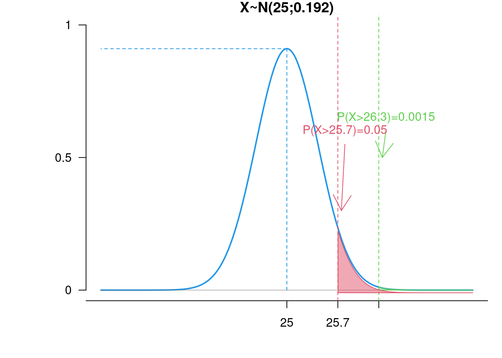
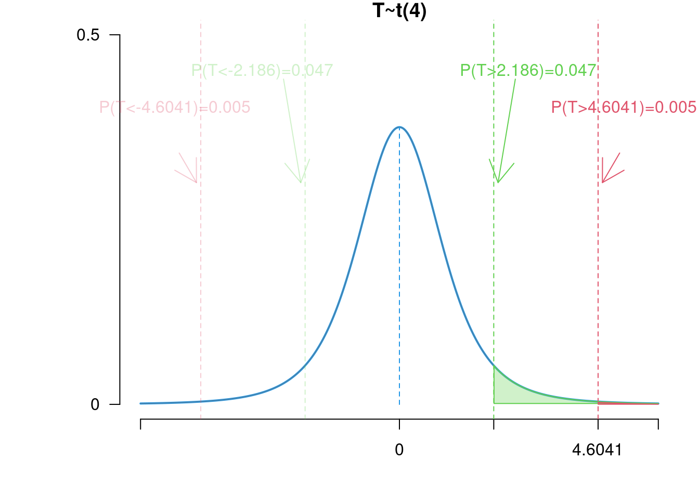

Chapter 5 Hypothesis testing
So far we have conducted statistical inference based on numerical estimator values (point estimates and interval estimates). Well, there are problems where you want to verify a certain assumption or hypothesis. It’s less about getting a number and more about supporting a hypothesis based on the data (e.g. was a marketing campaign effective?).
Statistical hypothesis testing answer the questions regarding whether the data supports certain hypotheses about the underlying distribution or not, and allow to come up with a decision for one of the possibilities using the tools of probability theory.
In this chapter we will learn:
- How to formulate the test hypotheses,
- which test procedures should be used and when?
- how to make a sound test decision.
5.1 The basic idea of statistical testing
Example 5.1 (Discount campaign) Suppose you would like to check whether a discount campaign has contributed to a persistent increase in sales.
A pilot group of \(n=30\) randomly selected customers participated in the discount campaign and got a discount offer.
The remaining customers did not receive a discount and generated the average sales amount of \(25\) EUR with a known standard deviation of \(\sigma=2.4\).
The discount group generated the average sales amount of \(\overline y=26.3\) EUR. Does this mean, that the marketing campaign is associated with a persistent sales increase?
There are two possibilities:
The campaign is actually effective: it increases sales persistently and we would be making a wrong decision by assuming that the increase in sales is random \(\Rightarrow\) Company may abandon an effective campaign.
The campaign is actually ineffective: sales in the pilot group appeared higher just by chance, due to random fluctuations and we would be making a wrong decision by assuming that the increase in sales was due to the campaign \(\Rightarrow\) cost for a pointless discount campaign.
In the case of such two mutually exclusive conclusions, we distinguish between:
null hypothesis \(H_0\) (status quo \(\leadsto\) action does not change the behavior, increase the sales, …) is not rejected as long as there is not enough evidence to refute it.
Alternative hypothesis \(H_1\) (\(\leadsto\) action is effective, favorably changes the behavior, increases the sales, …) is accepted if “sufficient” evidence speaks against the null hypothesis.
Wrong decisions are always possible, and it is not possible to judge whether a given test decision is right or wrong. However, we construct statistical tests in such a way, that incorrect decisions have low probability.
\[ \begin{array}{c|cc} \hline &H_0\text{ not rejected }& H_0\text{ rejected }\\\hline H_0\text{ is correct }&\text{decision correct }& \text{decision incorrect}\\ &&\text{(Type 1 error)}\\ H_0\text{ is wrong }&\text{decision incorrect}&\text{decision correct}\\ &\text{(Type 2 error)}&\\\hline \end{array} \]
Two types of incorrect decisions can occur: incorrectly rejecting or incorrectly retaining the null hypothesis:
Type 1 error when \(H_0\) is rejected even though \(H_0\) is true,
Type 2 error when \(H_0\) is not rejected even though \(H_1\) is true.
The aim is to define a decision-making strategy so that Type 1 and Type 2 errors are kept as small as possible.
Example 5.2 (Discount campaign) Example 5.1 cont.
Probabilistic formulation of the problem:
Sample \(Y_1,Y_2,\ldots,Y_{30}\): Sales from pilot customers.
Assumption: \((Y_i)_{i=1,\ldots,30}\) are independent repetitions of a normally distributed random variable \(Y\) with unknown expected value \(\mu\) and known standard deviation \(\sigma=2.4\).
Then, sample mean \(\overline Y\) of the \(30\) realizations is a normally distributed random variable with expected value \(\mu\) and standard deviation \(\sigma/\sqrt{30}\).
Setting up the hypotheses:
\(H_0\): \(\mu=25.0\) (action not effective,“Status Quo”)
\(H_1\): \(\mu>25.0\) (action effective)
Basis for the decision making:
it makes sense to keep \(H_0\) if \(\overline y\) is only slightly larger than \(25\).
it makes sense to reject \(H_0\) if \(\overline y\) is significantly larger, e.g. \(35.0\).
\(\leadsto\) Find critical \(\overline y^\ast\) from which on \(H_0\) is rejected.
Choosing \(\overline y^\ast\) using probabilistic considerations:
1st attempt: \(\overline y^\ast=25.25\) Then \(H_0\) is rejected with a probability of \(28\%\), assuming that \(H_0\) is true (Error Type 1): \[\begin{align*} \mathbb P(H_0 \text{ reject}|H_0 \text{ is true})&= \mathbb P(\overline Y\geq 25.25|\mu=25.0)\\ &= \mathbb P\left(\frac{\overline Y-25,0}{2.4/\sqrt{30}} \geq \frac{25.25-25.0}{2.4/\sqrt{30}}\right)\\ &= 1-N(0.57) = 0.2843. \end{align*}\] \(\leadsto\) Probability of type I error too high.
2nd attempt: \(\overline y^\ast=26.5\) \(H_0\) is “only” rejected incorrectly with probability \(0.03\%\): \[\begin{equation*} \mathbb P(H_0 \text{ reject}| H_0 \text{ is true}) = \mathbb P(\overline Y\geq 26.50|\mu=25.0) = 0.0003. \end{equation*}\] \(\leadsto\) probability of error 1. type very small (good!)
But: Probability of type 2 error may be high (a distribution other than \(H_0\) might be more plausible for the range of values lying that far from the mean).
Idea: Choose \(\overline y^\ast\) so that \(H_0\) is (falsely) rejected with a given small probability \(\alpha\), e.g. \(\alpha=0.05\): \[\begin{align*} \mathbb P(H_0 \text{ reject}|H_0 \text{ is true})& = \mathbb P(\overline Y \geq \overline y^{\ast}|\mu=25.0) =0.05. \end{align*}\]
This gives \(\overline y^\ast=25.718\).
Our decision would be: Reject the null hypothesis that action has no effect, because \(\overline Y=26.3\geq 25.718\).

This is not a proof that \(H_0\) is false. High evidence against \(H_0\) leads to rejection. Because: If the true expected value is \(25.0\), samples with \(\overline Y\geq 25.718\) can still occur with a probability of \(5\%\).
Decision rule: Reject \(H_0\) if \(\overline Y\geq 25.718\).
The following concept is also useful: Assuming that \(H_0\) holds, what is the probability - if the experiment is repeated - of obtaining values that are at least as extreme as the one observed? This probability is called the \(p-\)value and is calculated as follows:
\[\begin{equation*} \mathbb P(\overline Y_{\text{Rep.}}\geq \overline Y|H_0) = \mathbb P(\overline Y_{\text{Rep.}} \geq 26.3|\mu=25.0) = 0.0015 = 0.15%. \end{equation*}\]
5.2 Hypothesis tests for \(\mu\)
We have already seen the example with the discount campaign, where we actually care about mean sales \(\rightarrow \mu\)! The population mean \(\mu\) is a distribution parameter, that builds frequently a basis for hypothesis testing. Below we specify the tests concerning hypothesis testing about \(\mu.\)
5.2.1 The Gauss test
Assume that independent, identically distributed random variables are given \(X_1, \ldots, X_n\) with
\(X_i\sim N(\mu,\sigma^2)\), or
\(X_i\) with any continuous distribution, \(\mathbb E(X_i)=\mu\), \(\text{Var}(X_i)=\sigma^2\), \(n\) big enough (rule of thumb \(n\geq 30\) ).
\(\sigma^2\) is known.
Consider the following test problems.
Statistical testing problem:
The hypothesis of interest is formulated as alternative hypothesis \(H_1\). It is checked against the complementary null hypothesis \(H_0\).
A statistical test is about deciding whether the observed behavior in a sample applies to the whole population.
\[\begin{align*} (a) \quad& H_0:\mu=\mu_0\quad&\text{ versus } \quad H_1:\mu\not=\mu_0 &\text{ (two-sided)}\\ (b) \quad & H_0:\mu\geq (=)~\mu_0\quad&\text{ versus } \quad H_1:\mu<\mu_0 &\text{ (left-sided)}\\ (c) \quad & H_0:\mu\leq (=)~\mu_0\quad&\text{ versus } \quad H_1:\mu>\mu_0 &\text{ (right-sided)} \end{align*}\]
- Test statistics is the random variable, for which the distribution under \(H_0\) is known:
\[\overline X\sim N\left(\mu, \frac{\sigma^2}n\right)\] or standardized: \[\displaystyle Z= \frac{\overline X-\mu_0}{\sigma/ \sqrt{n}}\stackrel{}{\sim} N(0,1).\]
- Rejection region: How large does \(\overline X\) or \(Z\) have to be so that it is extremely unlikely that \(\overline X\) or \(Z\) follows the distribution under \(H_0\)? First, specify “extremely unlikely”; usual values \(0.01\); \(0.05\); \(0.1\), denoted as significance level/ confidence level with symbol \(\alpha\).
This results in the rejection region, i.e. those values of the random experiment, which point in the direction of the alternative hypothesis, and whose probability under \(H_0\) is less than \(\alpha\):
Based on the test statistics \(Z\), the decision in favor of \(H_1\) in the test problem is taken, if:
\[\begin{align*} (a)\quad& |z|>N_{1-\alpha/2}&\text{ (two-sided)}\\ (b)\quad& z<-N_{1-\alpha}&\text{ (left-sided)}\\ (c)\quad&z>N_{1-\alpha}&\text{ (right-sided)} \end{align*}\]
Example 5.3 (Quality inspection of pencils) Pencils are produced with a should be length of \(17\) cm.
Test problem: \[\begin{align*} (a) \quad& H_0:\mu=17\quad\text{ versus } \quad H_1:\mu\not=17&\text{ (two-sided)}\\ \end{align*}\]
\(\alpha=0.01\) is chosen as the significance level.
The length \(X\) of the pencils is approx. normally distributed with \(\mathbb E(X)=\mu\) and \(\text{Var}(X)=\sigma^2=(1.5)^2=2.25\).
Test statistics: \(Z = \frac{\overline{X}-\mu_0}{\sigma/\sqrt{n}}=\frac{\overline{X}-17}{1.5/\sqrt{n}}\sim N(0;1).\)
A sample (\(n=5\)) is taken from current production; the following lengths are measured:
\[19.2\mathrm{cm};\ 17.4\mathrm{cm};\ 18.5\mathrm{cm};\ 16.5\mathrm{cm};\ 18.9\mathrm{cm}\]
This results in \(\overline x=18.1\text{cm}\) and the realization of the test statistics:
\[\begin{equation*} z=\frac{\overline x-\mu_0}{\sigma/\sqrt{n}} = \frac{18.1-17}{\sqrt{2.25}/\sqrt{5}} = 1.64. \end{equation*}\]
The rejection region is given as the \((1-\alpha/2)=(1-0.005) = 0.995\)-quantile of the standard normal distribution, so \(H_0\) is rejected if \((a)~|z| >2.5758.\)
Because \(|z|=1.64\not >2.5758\), \(H_0\) is not rejected.
5.2.2 The \(t\) test
As in the case of the Gauss test, a hypothetical expected value \(\mu_0\) should be compared with an actual, unknown expected value. In contrast to the assumption in the Gauss test, the variance \(\sigma^2\) is assumed to be unknown here.
This leads to a different normalization in the denominator of the test statistics than in the Gaussian test, namely the unknown variance \(\sigma^2\) is replaced by sample variance \(S^2=\sum_i (X_i-\overline X)^2/(n-1)\).
In the following, let \(t(n-1)\) denote the Student \(t\) distribution with parameter \(n-1\) (degrees of freedom).
Assumptions: \(X_1,\ldots, X_n\) are independent and identically distributed with \(X\sim N(\mu,\sigma^2)\) or arbitrarily distributed and \(n>30\).
Hypotheses: \[\begin{align*} \text{(a)} \quad & H_0:\mu=\mu_0\quad\text{ versus } \quad H_1:\mu\not=\mu_0\\ \text{(b)} \quad & H_0:\mu=\mu_0\quad\text{ versus } \quad H_1:\mu<\mu_0\\ \text{(c)} \quad & H_0:\mu=\mu_0\quad\text{ versus } \quad H_1:\mu>\mu_0. \end{align*}\]
Test statistics: \[\displaystyle T=\frac{\overline X-\mu_0}{S/\sqrt{n}}\sim t(n-1)\]
under \(H_0.\)
- Rejection region:
\[\begin{align*} \text{(a)} \quad & |t|>t_{1-\alpha/2,n-1}\\ \text{(b)} \quad & t<t_{\alpha,n-1}=-t_{1-\alpha,n-1}\\ \text{(c)} \quad & t>t_{1-\alpha,n-1} \end{align*}\]
Example 5.4 (Quality inspection of pencils) Example 5.3 cont.
We consider the same problem without the assumption of a known variance.
Test problem: \(\displaystyle H_0: \mu=17\quad\text{ versus } \quad H_1: \mu\not=17\).
\(\alpha=0.01\) is chosen as the significance level.
Test statistics: \(T = \frac{\overline{X}-\mu_0}{s/\sqrt{n}}=\frac{\overline{X}-17}{s/\sqrt{n}}\sim t(n-1).\)
The following pencil lengths are available as data:
\[\begin{equation} 19.2\mathrm{cm};\ 17.4\mathrm{cm};\ 18.5\mathrm{cm};\ 16.5\mathrm{cm};\ 18.9\text{cm}.\end{equation}\]
This results in \(\overline x=18.1cm\) and \(s^2=1.265\).
The test statistics value is: \(\displaystyle t = \frac{\color{red}{\overline x}-17}{\color{blue}s/\sqrt{n}} = \frac{\color{red}{18.1}-17}{\color{blue}{1.125}/\sqrt{5}} = 2.186\).
The critical value is the \((1-\alpha/2)\)-quantile of \(t(n-1)\) distribution, so \(t_{0.995,4} = 4.604\). The rejection region is: \(|t|>4.694.\)
Since for the present realization of \(T\) holds \(|2.186|\not>4.604\), \(H_0\) is not rejected.

5.3 Hypothesis tests for \(p\)
Now we formally define hypothesis testing for proportion \(p\). Consider the following example:
Example 5.5 (Quality inspection) Before a batch of goods is delivered, the quality is checked on the basis of a random sample.
An attribute check is carried out. This means that for each piece produced, it is recorded whether it meets the quality standards (“good”) or not (“bad”). The bad pieces are counted - the number can be assumed to be binomial distributed with parameter \(p\) (proportion of the defect pieces) and \(n\) number of samples checked.
A customer accepts the delivery, if the percentage of the defect peaces is at most \(10\%\).
For cost reasons, not the entire delivery can be checked.
A sample of \(n=1000\) pieces results in \(102\) defect pieces.
Is the difference between \(10.2\%\) and \(10\%\) small enough to conclude that the actual proportion of defect peaces is at most \(10\%\)?
5.3.1 The exact binomial test
General: Let \(X_1, \ldots, X_n\) be sample variables with \[\begin{equation*} X_i= \begin{cases} 1, &\text{ if } A \text{ occurs},\\ 0, &\text{ if } \overline A \text{ occurs}. \end{cases} \end{equation*}\]
Let the probability of the event \(\{X_i=1\}\) be \(p\) (unknown!).
Statistical testing problem:
The hypothesis of interest is formulated as alternative hypothesis \(H_1\). It is checked against the complementary null hypothesis \(H_0\).
A statistical test is about deciding whether the observed behavior in a sample applies to the whole population.
\[\begin{align*} (a) \quad& H_0:p=p_0\quad&\text{ versus } \quad H_1:p\not=p_0 &\text{ (two-sided)}\\ (b) \quad & H_0:p\geq (=)~p_0\quad&\text{ versus } \quad H_1:p<p_0 &\text{ (left-sided)}\\ (c) \quad & H_0:p\leq (=)~p_0\quad&\text{ versus } \quad H_1:p>p_0 &\text{ (right-sided)} \end{align*}\]
- Test statistics is the random variable, for which the distribution under \(H_0\) is known: \[\begin{equation*} \text{Number of "successes": } X=\sum_{i=1}^n X_i \end{equation*}\]
If the assumption of independent draws is justified, then \(X=\sum_{i=1}^n X_i\) is binomially distributed with parameters \(n\) and \(p\).
- Rejection region: How large does \(X\) have to be so that it is extremely unlikely that \(X\) follows the distribution under \(H_0\)? First, specify “extremely unlikely”; usual values \(0.01\); \(0.05\); \(0.1\), denoted as significance level/ confidence level with symbol \(\alpha\).
This results in the rejection region, i.e. those values of the random experiment, which point in the direction of the alternative hypothesis, and whose probability under \(H_0\) is less than \(\alpha\):
\[\begin{align*} (a)& ~H_1:p\not=p_0: \mathbb P(X{\color{red}<}~x_{lower}|H_0) + \mathbb P(X{\color{blue}>}~x_{upper}|H_0)&\leq \alpha &\text{ (two-sided)}\\ (b)& ~H_1:p<p_0: \mathbb P(X{\color{red}<}~x_{lower}|H_0) &\leq \alpha &\text{ (left-sided)}\\ (c)& ~H_1:p>p_0:\mathbb P(X{\color{blue}>}~x_{upper}|H_0)&\leq \alpha&\text{ (right-sided)}. \end{align*}\]
Example 5.6 (Quality inspection) Example 5.5 cont.
Hypotheses: \[\begin{align*} (c) \quad & H_0:p\leq 0.1\quad\text{ versus } \quad H_1:p>0.1 &\text{ (right-sided)} \end{align*}\]
Test statistics:
\[\begin{equation*} \text{Number of defect pieces: } X=\sum_{i=1}^n X_i\sim B(n=1000; p=0.1) \end{equation*}\]
- Rejection region:
\[ \begin{array}{cccccccc}\hline x_i&101&102& 105 &110 &115& 120& 125\\ \mathbb P(X>x_i)&0,432 &0,391& 0,278& 0,135& 0,053& 0,017& 0,005\\\hline \end{array} \]
\(\mathbb P(X>102) = 0.391\) i.e. not small enough (this should be smaller than the error probability \(\alpha=0.01/0.05/0.1\)).
What is the critical value? At what point would we decline? (\(\mathbb P(X>x_i)\leq \alpha\))
\[ \begin{array}{ccccc}\hline x_i&115& \color{red}{116}& 120& 125\\ \mathbb P(X>x_i)& 0,053&\color{red}{0,04334} &0,017& 0,005\\\hline \end{array} \]
- Test decision: do not reject the null hypothesis.
5.3.2 The approximate binomial test
For large \(n\), the binomial distribution can be approximated by the normal distribution \(\leadsto\) approximative binomial test.
Let \(X=\sum_{i=1}^n X_i\sim B(n,p)\) be sufficiently large for \(np\) and \(n(1-p)\). Then the following applies: \[\begin{align*} X&\stackrel{\text{approx.}}{\sim} N(np, np(1-p))\\\quad &\text{ or }\\ Z=\frac{X-n\, p}{\sqrt{n\, p(1-p)}} &\stackrel{\text{approx.}}\sim N(0,1). \end{align*}\]
Rule of thumb for “sufficiently large”: \(np>5\) and \(n(1-p)>5\).
Approximate binomial test
- Given the following test hypotheses for the parameter \(p\) of \(B(n,p)\) distribution:
\[\begin{align*} (a) \quad& H_0:p=p_0\quad\text{ versus } \quad H_1:p\not=p_0 &\text{(two-sided)}\\ (b) \quad & H_0:p=p_0\quad\text{ versus } \quad H_1:p<p_0 &\text{(left-sided)}\\ (c) \quad & H_0:p=p_0\quad\text{ versus } \quad H_1:p>p_0 &\text{ (right-sided)} \end{align*}\]
Test statistics: \(\displaystyle Z = \frac{X-n\, p_0}{\sqrt{n\, p_0 (1-p_0)}}\stackrel{\text{approx.}}\sim N(0,1)\) and the given level \(\alpha\)
Rejection region: the decision is made for \(H_1\) in the test problem, if:
\[\begin{align*} (a)\quad&|z|>N_{1-\alpha/2}\\ (b)\quad&z<-N_{1-\alpha}\\ (c)\quad&z>N_{1-\alpha}. \end{align*}\]
Example 5.7 (Quality inspection) Example 5.6 cont.
Formulation of the test problem (status quo corresponds to the defect pieces proportion of \(0.1\)): \[\begin{equation*} H_0: p = 0.1\quad\text{ versus }\quad H_1: p>0.1. \end{equation*}\]
Test statistics and its realized value for a sample size of \(n=1000\) when \(x=102\) defect pieces are observed:
\[\begin{align}\displaystyle Z&=\frac{X-1000\cdot 0,1}{\sqrt{1000\cdot 0,1\cdot 0.9}}=\frac{X-100}{\sqrt{90}} \stackrel{\text{approx.}}{\sim}N(0;1),\\ z&=\frac{{\color{red}x}-100}{\sqrt{90}} = \frac{\color{red}{102}-100}{\sqrt{90}} = 0.21. \end{align}\]
Rejection region \(C=\{z:z>N_{1-\alpha}\}\), where \(N_{1-\alpha}\) is the \((1-\alpha)\)-quantile of the standard normal distribution (also called critical value).
Let \(\alpha=0.05\), then the critical value is \(N_{1-\alpha}=N_{0.95} = 1.64\).
Test decision: because \(0.21<1.64\), \(H_0\) cannot be rejected.
In words: The number of \(102\) defective pieces in the sample does not allow us to conclude that the proportion of defect pieces in the entire batch delivered is over \(10\%.\)
- Alternatively, one could ask how many pieces \(x^\ast\) would result in a rejection of \(H_0\)? Solving \[\begin{equation*} \frac{x^\ast-n\, p}{\sqrt{n\, p (1-p)}} >N_{1-\alpha}, \end{equation*}\] for \(x^\ast\) results \[\begin{equation*} x^\ast>\sqrt{n\, p(1-p)} N_{1-\alpha} + n\, p = 9.5\cdot 1.64 + 100 = 115.58. \end{equation*}\]
5.4 Type 1 and Type 2 errors
-
Type I error(wrongly rejecting \(H_0\)). The probability of a type I error: \[\mathbb P(H_0\text{ reject}|H_0\text{ true})\leq \alpha\] is controlled by the error probability \(\alpha\), also referred to as the significance level.
- A statistical test is called significance test at level \(\alpha\), \(0<\alpha<1\), if \[\begin{equation*} \mathbb P(H_0\text{ reject}|H_0\text{ true}) \leq \alpha, \end{equation*}\] i.e. \[\begin{equation*} \mathbb P(\text{Type 1 error})\leq \alpha. \end{equation*}\]
- In the case of rejecting the null hypothesis one can also says: “the result is statistically significant at level \(\alpha\)”.
- Interpretation: if \(100\) different samples are drawn from the distribution under the null hypothesis, then the proportion of false rejections in a statistical test at the level \(\alpha=5\%\) will be (approximately/in the expectation) equal to \(\frac 5{100}.\)
- Type II error(wrongly keeping \(H_0\)). The probability of a type II error, denoted as \(\beta\), is not controlled: \[\mathbb P(H_0\text{ not rejected}|H_1\text{ true}) = \beta\] Statisticians try to come up with the hypothesis tests that keep type II error as low as possible.
5.5 Exceeding probability: \(p-\)value
The \(p-\)value is defined as the probability to obtain under \(H_0\) a more extreme value for the test statistics in the direction of \(H_1\) than the value observed in the sample.
If the \(p-\)value is smaller than the specified significance level \(\alpha\), then \(H_0\) is rejected.
Otherwise (\(p-\)value is larger than \(\alpha\)), \(H_0\) is not rejected.
If the \(p-\)value is very small, it means that it is very unlikely to observe the present test statistics value under \(H_0.\)
The \(p-\)value is commonly used by software packages to facilitate decisions in statistical tests without the need to input the significance level.
Example 5.8 (Quality inspection of pencils) Example 5.3 cont.
In the quality inspection example, the test variable value is \(z=0.21\).
The \(p-\)value is given as: \[\begin{equation*} p = \mathbb P(Z> 0.21|H_0) = 1-\mathbb P(Z\leq 0.21|H_0) = 1-N(0.21) = 1-0.5832 = 0.4168. \end{equation*}\]
Since the \(p-\)value is greater than the specified significance level \(\alpha=0.05\), the null hypothesis cannot be rejected.
Calculating the \(p\)-value (\(Z\) is the test statistics):
- right-sided test:
\[ p-\text{value} = \mathbb P(Z> z\text{ under } H_0). \]
- left-sided test:
\[ p-\text{value} = \mathbb P(Z< z\text{ under } H_0). \]
- two-sided test:
\[\begin{align} p-\text{value} &= \mathbb P(Z< -|z|\text{ under } H_0) + \mathbb P(Z>|z|\text{ under } H_0)\\ &= 2\cdot \mathbb P(Z>|z|\text{ under } H_0) \text{ in case of a symmetric distribution for }Z. \end{align}\]